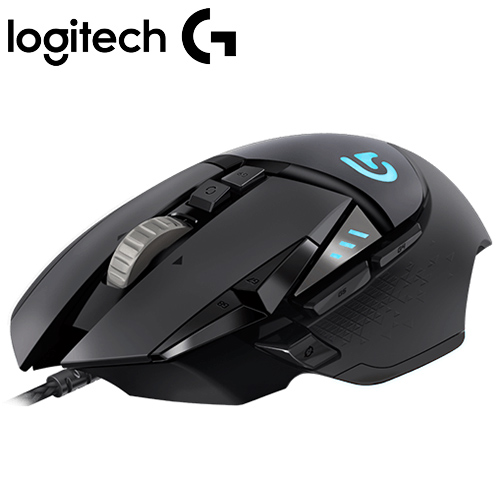

其他周邊 Accessories
其他電腦周邊商品包刮主機殼、風扇、燈條(依個人喜好)、鍵盤、滑鼠、耳機、麥克風以及鏡頭
主機殼
主機殼分為E-ATX、ATX、mATX以及ITX，其大小取決於可放置主機板空間，選購時應注意主機板大小，以免發生主機版放不進或過小，同時主機可也分為電源供應器上置式以及下置式，其散熱能力由下置式取勝，但價格也相對較高，其他可由個人喜好選購
風扇
風扇分為小風扇、渦輪風扇、塔扇和水冷，其扇耴能力也如此排列，其中，中央處理器、顯卡即背擋板上最常安裝風扇，甚至有時還會加裝在記憶體上
燈條
燈條為可有可無的裝飾物品，其只能用於主機殼美觀上，通常價格約100元左右
鍵盤
鍵盤為整台電腦核心的輸入裝置，其分為薄膜式、蝴蝶式和機械式鍵盤，機械式鍵盤最為昂貴，但打擊手感和壽命最佳。

滑鼠
滑鼠為次要的電腦輸入裝置，可依個人喜好進行購買，但若有電競需求，可選擇多按鍵滑鼠
